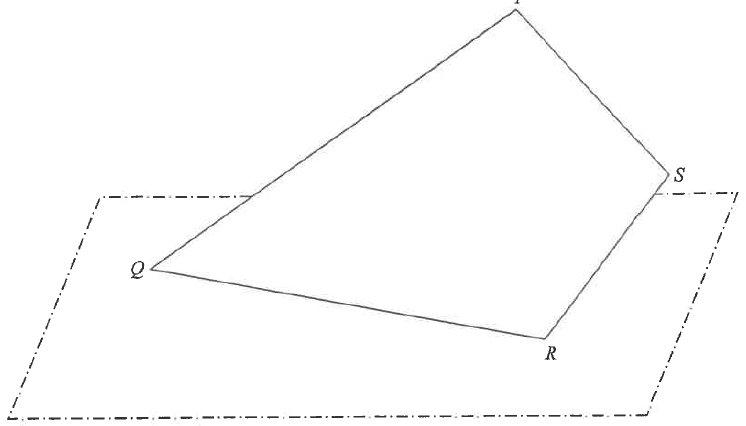

Scroll the solution to highlight the relevant parts.

We know $PQ = 60$ and the two angles in $\triangle PQR$:
$\angle QPR = 180^\circ - 30^\circ - 55^\circ = 95^\circ$
Use the sine formula in $\triangle PQR$ to find $PR$ and later $QR$:
$\dfrac{PR}{\sin \angle PQR} = \dfrac{PQ}{\sin \angle PRQ}$
$\dfrac{PR}{\sin 30^\circ} = \dfrac{60}{\sin 55^\circ}$
$PR = \dfrac{60\sin 30^\circ}{\sin 55^\circ} \approx 36.62323766\ \text{cm}$
In $\triangle PRS$ we know $PS = 40$, $PR \approx 36.62323766$ and
$\angle RPS = \angle QPS - \angle QPR = 120^\circ - 95^\circ = 25^\circ$.
Apply the cosine formula:
$RS^2 = PS^2 + PR^2 - 2(PS)(PR)\cos\angle RPS$
$RS^2 = 40^2 + (36.62323766)^2 - 2(40)(36.62323766)\cos 25^\circ$
$RS^2 \approx 285.890411$
The card is split by diagonal $PR$ into $\triangle PQR$ and $\triangle PRS$:
$\text{Area} = \tfrac{1}{2}(PQ)(PR)\sin\angle QPR + \tfrac{1}{2}(PR)(PS)\sin\angle RPS$
$= \tfrac{1}{2}(60)(36.62323766)\sin 95^\circ + \tfrac{1}{2}(36.62323766)(40)\sin 25^\circ$
$\approx 1094.738813 + 309.353423 \approx 1404.092236\ \text{cm}^2$
Let $H$ be the foot of the perpendicular from $P$ to $QR$. In the plane of the card,
$PH = PQ\sin\angle PQH = 60\sin 30^\circ = 30\ \text{cm}$.
Let $G$ be the projection of $P$ on the horizontal ground. Then $\angle PHG = 32^\circ$ and $PG = PH\sin 32^\circ$:
$PG = 30\sin 32^\circ \approx 15.89757793\ \text{cm}$
Let $K$ be the projection of $S$ on the ground, and $T$ the intersection of $PS$ produced and $QR$ produced. Then $\triangle SKT \sim \triangle PGT$ and $PT = PQ$ (isosceles $\triangle PQT$ since $\angle PQT = \angle PTQ = 30^\circ$).
$SK = \left(\dfrac{PT-PS}{PT}\right)PG = \left(\dfrac{60-40}{60}\right)PG = \dfrac{1}{3}PG = \dfrac{1}{3}(30\sin 32^\circ) = 10\sin 32^\circ$
If $\theta$ is the angle between $RS$ and the ground, then in right triangle $SRK$:
$\sin\theta = \dfrac{SK}{RS} = \dfrac{10\sin 32^\circ}{16.90879944}$
$\theta \approx 18.26416068^\circ \le 20^\circ$
The angle between $RS$ and the horizontal ground is approximately $18.3^\circ$, which is less than 20°.
$PR \approx 36.62$ cm | $RS \approx 16.9$ cm | Area $\approx 1400$ cm² | Shortest distance $\approx 15.9$ cm | Angle of $RS \approx 18.3^\circ \le 20^\circ$
Question. \(PQRS\) is a quadrilateral paper card, where \(PQ=50\ \text{cm}\), \(PS=30\ \text{cm}\), \(\angle PQR=35^\circ\), \(\angle PRQ=60^\circ\) and \(\angle QPS=110^\circ\).
(a) Find the length of \(RS\).
(b) Find the area of the paper card.